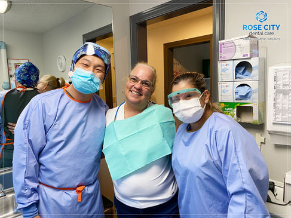
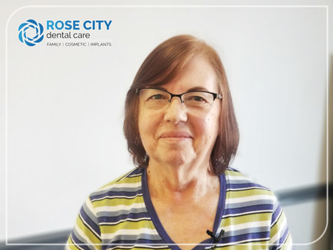
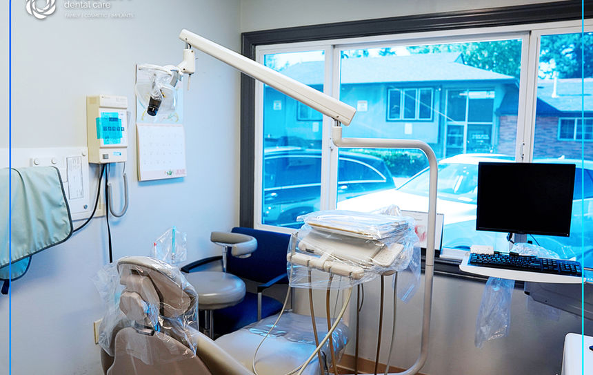

Emergency intent gets buried
Someone in pain should not have to hunt through a brochure-style site to decide what to do next.
SE Portland dental care
Rose City Dental Care already has the trust signals: a real local practice, a caring team, and reviews from patients who drive hours to come back. This concept turns that proof into a cleaner, more confident first impression.

The gap
Someone in pain should not have to hunt through a brochure-style site to decide what to do next.
Reviews, team warmth, and local proof exist, but they are not organized into a strong first impression.
A dental site should reduce tension. The redesign should feel calm, clear, and quietly premium.
The proposed experience
Instead of making every visitor decode the same wall of information, the homepage can route them by intent immediately.
Path 01
Lead with urgency, clarity, and the next concrete action: call now, get calm help, know what to expect.
Path 02
Show the practice, explain the first visit, and make the next step feel simple rather than administrative.
Real proof, not stock polish
The opportunity here is not to invent a fake brand. It is to frame the real office, the real team, and the real patient trust in a way that feels more intentional.

Trust architecture
These quotes are already strong. The redesign just gives them a cleaner stage.
“My experience at Rose City Dental was tremendous... His expertise and manner made me feel extremely comfortable... I highly recommend Rose City Dental with no reservations.”
“Dr. Tae is a true artist and master of his craft... I will make the 6hr drive to get my teeth done here.”
“Dr. Lee is one of the best dentists I’ve ever been to. I am an extremely anxious dental patient and he has put me at ease every time I’ve seen him.”
Visit the office
Rose City Dental Care is located at 2341 SE 122nd Ave #100, Portland, OR 97233. The redesign should make the address, phone, and next step visible without friction.
